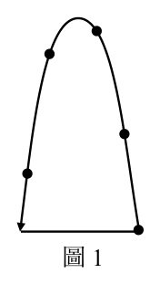
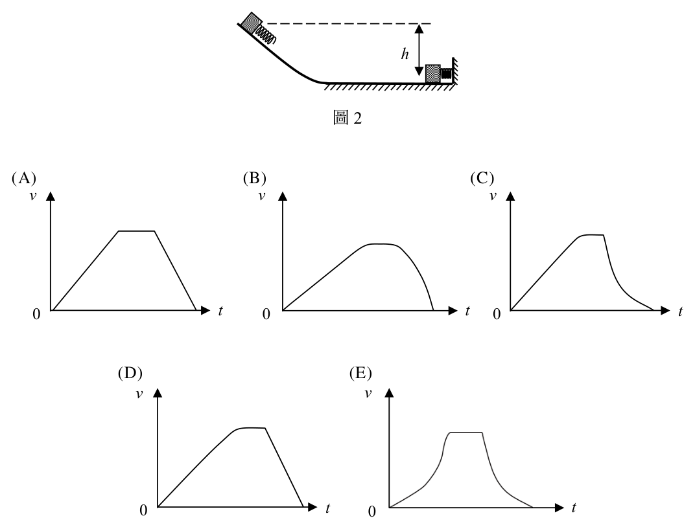
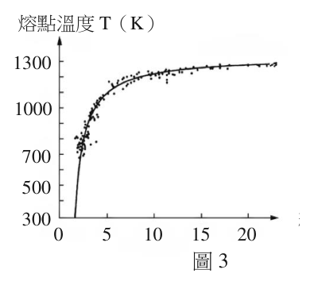
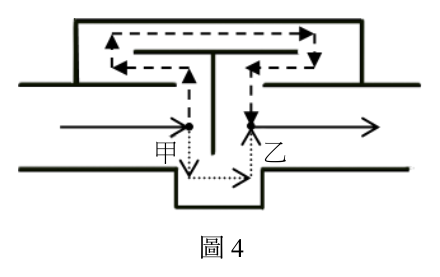
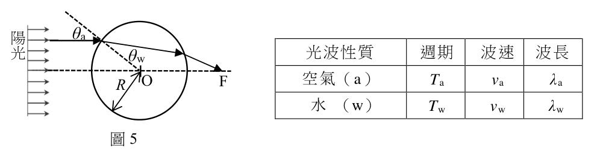
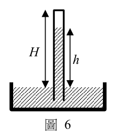
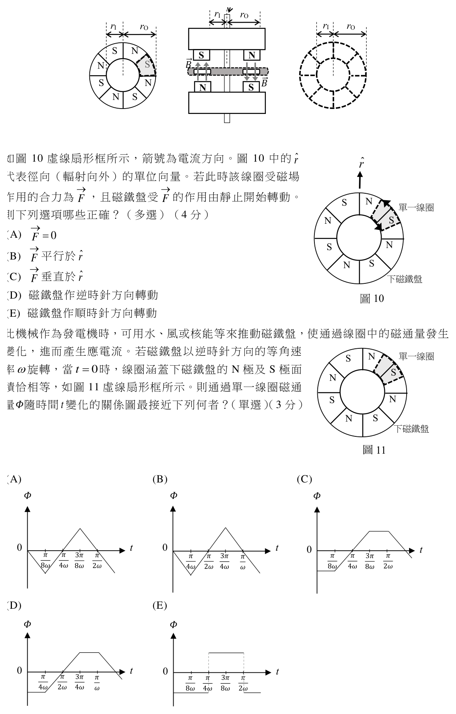

開卷有益 ／
分科測驗 ／ 物理 ／ 112 年112 年分科測驗物理試題與答案
這一頁是民國 112 年分科測驗物理的整份歷屆試題，共 25 題，題目與標準答案出自大考中心 分科測驗歷年試題（依著作權法 §9，考試試題不受著作權保護），其中 25 題附有詳解。以下逐題列出題幹、選項與答案；要計時作答或記錄成績，請用線上練習。
大學入學考試中心原始場次代碼：分科物理
線上作答這一科 →
全部 25 題
第 1 題
下列選項的因次何者與能量因次不同?
（A） 質量乘以速率平方（B） 力矩乘以角度（C） 壓力乘以體積（D） 衝量乘以時間（E） 電量乘以電壓答案：（D）
詳解與考點 正解：判準是把各物理量化為 M、L、T 的因次。能量的因次為 M L^2 T^-2；衝量的因次是力乘時間，即 M L T^-1，再乘一次時間後成為 M L，與能量不同，故選 D。
A：質量乘速率平方的因次為 M (L T^-1)^2 = M L^2 T^-2，與能量相同。
B：力矩是力乘長度，因次為 M L^2 T^-2；角度為無因次，乘上後不改變因次。
C：壓力乘體積 = （力/面積）×體積 = 力×長度，因次為 M L^2 T^-2，與能量相同。
E：電壓可寫成能量除以電量，因此電量乘電壓就是能量，因次相同。
本題考點：因次分析（dimensional analysis）——比較物理量時，先全部改寫為基本因次 M、L、T；能量因次（dimension of energy）——機械能可由力乘長度判定為 M L^2 T^-2；無因次量（dimensionless quantity）——角度以弧度表示時不改變乘積的因次。
第 2 題
下列關於電磁波的敘述,何者正確?
（A） 電磁波為縱波（B） 可見光是電磁波,在真空中與介質中均以相同速率傳播（C） 電磁波與力學波一樣都有反射、折射、干涉與繞射現象（D） 相同強度的電磁波頻率越高,在真空中傳播的速率越快（E） 只要電場和磁場同時存在,便會產生交互作用而形成電磁波答案：（C）
詳解與考點 正解：判準是電磁波與其他波動同樣具有波的基本現象，因此可發生反射、折射、干涉與繞射。這些現象由電場、磁場的波動傳播所呈現，並不要求存在物質介質，故選 C。
A：電磁波的電場與磁場振動方向都垂直於傳播方向，屬橫波，不是縱波。
B：可見光在真空中的速率為 c，進入介質後速率通常變為 c/n；真空與介質中的傳播速率不相同。
D：真空中的電磁波速率皆為 c，不因頻率高低而變快；頻率改變的是波長，關係為 c=fλ。
E：同時存在電場和磁場可以是靜電場與靜磁場，未必向外傳播；形成電磁波需要隨時間變化且能彼此維持的電、磁場。
本題考點：電磁波（electromagnetic wave）——辨別橫波與縱波時看場的振動方向是否垂直傳播方向；真空光速（speed of light in vacuum）——真空中 c=fλ，頻率改變時由波長配合；波動現象（wave phenomena）——反射、折射、干涉與繞射是各類波可共享的行為。
第 3 題
珠寶商使用最小刻度為1 mg 的電子秤測量金飾質量5 次,求得平均值為 m AV ,標準差
為SD。若以 u A 、 u B 與 u C 分別代表標準的A 類、B 類與組合不確定度,且已知分析過
程計算機顯示 m AV 為95.367823 g、 u C 為0.35686524 mg,則下列選項何者正確?
（A） uA = SD/ 4（B） uB = 1 mg（C） uC = (uA + uB /) 2（D） 金飾質量的報告應為 mAV = 95.4 g , uC = 0.4 mg（E） 金飾質量的報告應為 mAV = 95.36782 g , uC = 0.36 mg答案：（E）
詳解與考點 正解：本題由 5 次量測的平均值與組合不確定度決定報告位數。u_C=0.35686524 mg 取適當有效位數為 0.36 mg，而 0.36 mg=0.00036 g，平均值要保留到 0.00001 g 位，故 95.367823 g 應寫為 95.36782 g。E 的平均值與不確定度位數一致，故選 E。
A：5 次量測的 A 類標準不確定度是平均值的標準差，u_A=SD/√5，不是 SD/4。
B：最小刻度 1 mg 是儀器解析度，不可直接當作 u_B；B 類不確定度要依解析度造成的誤差分布估算。
C：彼此獨立的 A、B 類不確定度應以 u_C=√(u_A^2+u_B^2) 合成，不是將兩者直接相加或平均。
D：0.4 mg=0.0004 g，並不支持把平均值粗略到 95.4 g；報告值的小數位應與不確定度的末位相配合。
本題考點：A 類不確定度（Type A uncertainty）——重複量測時用標準差除以 √n 評估平均值的不確定度；B 類不確定度（Type B uncertainty）——儀器解析度需依誤差分布換算，不能直接照抄刻度；組合不確定度（combined standard uncertainty）——獨立來源以平方和開根號合成，最後使測量值的位數與不確定度一致。
第 4 題
空間中有相距2d 的兩靜止點電荷,已知將此兩點電荷緩慢移近至相距d 靜止,需作功
W 。若再將兩點電荷緩慢移近至相距 d / 5 靜止,則需再作多少功?
（A） 10W（B） 8W（C） 5W（D） 4W（E） W答案：（B）
詳解與考點 正解：緩慢移動電荷時外力所作功等於電位能改變。令 K=kq_1q_2，從 2d 移至 d 時，W=K(1/d−1/(2d))=K/(2d)。再從 d 移至 d/5 時，W'=K(1/(d/5)−1/d)=4K/d=8W，故選 B。
A：10W 把距離縮小的倍數直接當成功的倍數，卻忽略電位能改變要計算兩端 1/r 的差。
C：5W 只反映 1/(d/5)=5/d 的一部分，沒有扣除起始位置 d 對應的 K/d。
D：4W 對應的是第二段電位能差寫成 4K/d 後，漏掉第一段 W=K/(2d) 所造成的比例換算。
E：兩段位移的起終距離不同，電位能改變不會恰好相同；代入 1/r 後可得第二段為 8W。
本題考點：電勢能（electric potential energy）——兩點電荷系統以 U=kq_1q_2/r 表示，緩慢移動時比較 ΔU；外力作功（external work）——準靜態過程中 W_ext=ΔU；反比函數差（inverse-distance difference）——距離改變的功要算 1/r 的差，不能只看距離倍數。
第 5 題
某生設計了一個不需使用計時器而可量測重力加速度的實驗。他選用了一個彈力常數
為k 、自然長度為l 、繫有質量為m 之質點的彈簧,使其作水平面之簡諧運動。再以一
個擺長為L、擺錘不計體積、質量為M 的單擺,調整其擺長L,使兩個系統之簡諧運動
的週期相同,則其所測得的重力加速度量值為何?
（A） lM / k（B） Lm / k（C） LM / k（D） lk / M（E） Lk / m答案：（E）
詳解與考點 正解：水平彈簧振子的週期為 T_s=2π√(m/k)，自然長度 l 不影響週期；小振幅單擺的週期為 T_p=2π√(L/g)，擺錘質量 M 不影響週期。令兩週期相等，m/k=L/g，解得 g=Lk/m，故選 E。
A：l 與 M 都不出現在這兩個週期公式中，不能由週期相等導出 lM/k。
B：等週期關係要求 g=Lk/m，k 應在分子、m 應在分母，Lm/k 的比例關係相反。
C：單擺週期與擺錘質量 M 無關，彈簧週期也不能以 L 與 M 的乘積取代 m/k。
D：自然長度 l 不是單擺的擺長 L，且擺錘質量 M 不影響單擺週期，故此式不符合週期條件。
本題考點：彈簧簡諧運動（mass-spring simple harmonic motion）——用 T=2π√(m/k)，週期不依賴彈簧自然長度；單擺（simple pendulum）——小振幅下用 T=2π√(L/g)，週期不依賴擺錘質量；等週期法（period matching）——把兩系統的週期相等，可消去 2π 並求未知量。
第 6 題
某一雜技表演者用五顆相同的小球做單手拋球表演,由同一高度依次將各球略微偏離鉛
直方向、向上拋出,當球回到原本被拋出的高度時,以同一隻手將球接
住,然後水平移動到拋出點,再拋出,如圖1 所示的逆時針軌跡。每次
拋球的時間間隔固定為τ,初速的鉛直分量皆為 0v ,各球的運動軌跡相
同,形成連續的循環。過程中,在空中而不在手中的球至少有四顆。假
設重力加速度的量值為g ,且空氣阻力可忽略,則下列選項何者正確?

（A） 0v 可以是 gτ / 2（B） 0v 可以是gτ
圖1（C） 每一小球在空中的時間可以是3τ（D） 小球在最高點時離拋出點的鉛直距離可以是 gτ2 / 2（E） 小球在最高點時離拋出點的鉛直距離一定大於 2gτ2答案：（E）
詳解與考點 正解：每隔 τ 拋出一球而任一時刻至少有四球在空中，單一小球的滯空時間 T 必須大於 4τ；若 T=4τ，接住回球的瞬間只剩另外三球仍在空中。拋出與接住高度相同時，T=2v0/g，因此 v0>2gτ。最高點的鉛直高度為 v0^2/(2g)，代入下限可得高度大於 2gτ^2，故選 E。
A：v0=gτ/2 時，T=2v0/g=τ，只會維持一球的滯空時間，無法達到至少四球在空中。
B：v0=gτ 時，T=2τ，仍小於所需的 4τ。
C：T=3τ 時，在一球剛被接住而尚未重新拋出時，空中的球數不足四顆。
D：最高高度為 gτ^2/2 時，反推 T=2τ，與至少四球持續滯空的條件不符。
本題考點：鉛直拋體運動（vertical projectile motion）——回到原高度的滯空時間用 T=2v0/g 判定；排程條件（timing constraint）——把「每隔 τ」與「至少四球在空中」轉成 T>4τ 的不等式；最高點（maximum height）——由 v0^2/(2g) 連結初速與最高高度。
一質量為m 的小木塊,前方繫有一理想彈簧,如圖2 所示。此系統由光滑斜面頂端自靜止滑下,進入光滑水平面後正向撞上鉛直牆面,彈簧因被壓縮
而使木塊減速,並將木塊原本的動能轉換為彈簧位能,之後 h
木塊在某一瞬間停止不動,定義此為終點。木塊自初始靜止
至終點的整個過程,木塊下降的鉛直高度為h,令重力加速度
圖2
為g ,且過程中力學能守恆、系統到達最大速率前尚未撞上
牆面,回答下列問題。
第 8 題
下列敘述何者正確?

（A） 木塊所達到的最大動能為mgh（B） 整個過程中,彈簧對木塊所作的功為正值,且等於mgh（C） 彈簧的彈性位能在終點時比在初始靜止時增加 mgh / 2（D） 木塊在終點的瞬間,彈簧對牆面的水平作用力量值必小於mg（E） 彈簧被壓縮的過程中,木塊進行等加速運動答案：（A）
詳解與考點 正解：從斜面頂端到剛接觸牆面前，彈簧尚未壓縮，木塊下降高度 h 所減少的重力位能全部轉成動能。又題幹明示最大速率出現在撞牆之前，因此 Kmax=mgh，故選 A。
B：彈簧在壓縮時使木塊減速，對木塊作功為負；其作功量為 ΔK=−mgh，不是正值。
C：終點木塊靜止，初始與終點的動能皆為零，重力位能減少 mgh 必全轉成彈簧位能，所以彈性位能增加 mgh，不是 mgh/2。
D：終點彈簧力為 kx，而能量關係只給 (1/2)kx²=mgh；未給 k 與 h 的關係，無法斷定 kx 必小於 mg。
E：壓縮過程中彈簧力 kx 隨壓縮量變大，木塊加速度大小也隨之變化，不是等加速運動。
本題考點：力學能守恆（conservation of mechanical energy）——光滑面且無耗散時，先用總能量追蹤重力位能、動能與彈性位能；彈簧作功（spring work）——彈簧使運動方向上的木塊減速時作負功；胡克定律（Hooke's law）——F=kx 代表彈簧壓縮越多，力與加速度越不固定。
第 9 題
考慮木塊的速率v 對時間t 的變化,下列圖形何者正確?
（A） （B） （C） v v v
0 t 0 t 0 t（D） （E） v v
0 t 0 t答案：（B）
詳解與考點 正解：速率曲線須分三段判斷。木塊在光滑斜面上受沿斜面固定的重力分量，加速度固定，速率線性增加；到水平面而尚未撞牆前，合力為零，速率維持最大值不變；開始壓縮彈簧後，彈簧力由零逐漸增大，減速度的量值愈來愈大，速率由最大值以曲線降到零。能依序呈現「直線上升、水平平台、彎曲下降」且速率連續的圖形為 B，故選 B。
A：若把斜面與水平面前進都畫成同一種加速狀態，就漏掉了水平面上尚未撞牆時合力為零的速率平台。
C：速率在接觸彈簧時不能突變；彈簧力起初為零，之後才隨壓縮量增加，圖形須連續轉入減速段。
D：把壓縮期間畫成直線等減速，等於假設彈簧力固定；實際上 F=kx，減速度會逐漸變大。
E：若曲線使木塊在停止前再次加速或維持最大速率，便與彈簧持續吸收動能、終點速率為零的條件矛盾。
本題考點：速度—時間圖（velocity-time graph）——斜率是加速度，水平段表示合力為零；運動連續性（continuity of motion）——接觸彈簧時速率不會跳變；簡諧運動的局部特徵（simple harmonic motion）——彈簧壓縮越多，回復力與減速度越大，因此減速段不是直線。
第 10 題
當物質顆粒或材料結構在奈米尺度時,會表現出有別於傳統材料的新穎物理性質。同學
查閱奈米科技相關文獻時發現:如圖3 所示,黃金的熔點會隨粒徑變小而減小,將展現
新穎的物理性質。下列同學對此圖的解讀與推論,何者正確?
熔點溫度T(K)
1300
1000
700
500
300 粒徑D(nm)
0 5 10 15 20
圖3

（A） 粒徑變小趨近於零時,熔點亦趨近於零（B） 材料變為奈米尺度時不存在固液氣三態（C） 粒徑變小時之熔點變化是由於量測困難所造成（D） 當粒徑小於5奈米時,粒子的熔點急遽變小（E） 當粒徑大於20奈米時,粒子的熔點急遽變大答案：（D）
詳解與考點 正解：題幹已指出黃金粒徑縮小到奈米尺度時，熔點會降低；判讀時只能採用題目所呈現範圍內的趨勢，不能任意外推到粒徑為零或更大粒徑。選項 D 指出小於5奈米時熔點下降特別明顯，符合題目要辨識的奈米尺度新穎性質，故選 D。
A：粒徑趨近零並不等於熔點必趨近零，這是把有限範圍內的下降關係作不受支持的極端外推。
B：材料進入奈米尺度仍可有固、液、氣等相態；改變的是相變條件與材料性質，不是三態概念消失。
C：題幹將熔點改變列為奈米材料的物理性質，不能把現象一概歸因於量測困難。
E：大於20奈米的情形不在題目指定的判讀範圍內，且粒徑變大也不能直接推出熔點會急遽上升。
本題考點：奈米尺度效應（nanoscale effect）——粒徑縮小時，先判斷題目是否要求由表面效應等性質改變解釋，而非視為量測誤差；圖表外推（extrapolation）——資料只支持其呈現區間內的關係，遇到趨近零或超出範圍的敘述要特別排除。
第 11 題
機車在排放廢氣時,常伴隨很大的噪音。利用干涉型消音器可以減低此類噪音,其設計
概念如圖4 所示。當聲波抵達甲點時使其分為兩股
不同路徑,分別行經上方虛線與下方點線,最後在
排氣管的乙點會合。假設某機車排氣管內的主要噪
音波長為1.0 公尺,則下列選項中,兩路徑的長度 甲 乙
相差為多少公尺時可以最有效減低噪音?

（A） 2.0（B） 1.0（C） 0.75
圖4（D） 0.50（E） 0.25答案：（D）
詳解與考點 正解：干涉型消音器要讓兩股同頻聲波在乙點相消，路徑差必須是半個波長的奇數倍。主要噪音的波長 λ=1.0 m，最小可達成破壞性干涉的路徑差為 ΔL=λ/2=1.0/2=0.50 m，因此兩波相差半週期而最有效消音，故選 D。
A：ΔL=2.0 m=2λ，兩波相差整數個週期，會同相疊加，不是最有效的相消條件。
B：ΔL=1.0 m=λ，同樣使兩波同相到達乙點，不能有效降低噪音。
C：ΔL=0.75 m=3λ/4，並非半整數倍波長，兩波相位沒有剛好相反。
E：ΔL=0.25 m=λ/4，只造成四分之一週期的相位差，不能完全相消。
本題考點：破壞性干涉（destructive interference）——同頻波要相消時，路徑差取（n+1/2）λ；相位差（phase difference）——整數倍 λ 代表同相，半整數倍 λ 才代表反相。
第 12 題
1868 年法國天文學者發現來自太陽的光譜有幾道特殊的暗紋,推斷是新元素的特性光譜,
這個新元素就以太陽的希臘文命名為氦。已知太陽光譜會出現上述暗紋的原因,是因為
氦原子會吸收特定頻率的入射光子所造成的,則下列敘述何者正確?
（A） 某元素光譜的暗紋頻率和氦原子光譜的暗紋頻率相同,則此元素一定是氦（B） 會出現暗紋是因為氦原子會將特定頻率光子繞射到不同的方向（C） 氦原子光譜的暗紋頻率和氫原子光譜的暗紋頻率完全相同（D） 氦原子光譜的暗紋頻率和氖原子光譜的暗紋頻率完全相同（E） 會出現暗紋其實就是因為氦原子會被入射光游離答案：（A）
詳解與考點 正解：暗紋來自氦原子選擇性吸收可使電子能階躍遷的特定頻率光子，這組頻率形成元素的特性吸收光譜。若某元素的暗紋頻率與氦原子的暗紋頻率相同，依特性光譜的判準即可判定為氦，故選 A。
B：繞射會改變光的傳播方向或使不同波長分開，不是氦原子選擇性移除特定頻率光子的機制。
C：氫與氦的電子結構及能階不同，吸收光譜不會完全相同。
D：氖與氦同樣具有不同的電子結構及能階，暗紋頻率不會完全相同。
E：吸收光譜的暗紋通常對應束縛電子在能階間的躍遷；游離是電子脫離原子所需的另一種能量條件，不能把兩者等同。
本題考點：吸收光譜（absorption spectrum）——連續光通過原子氣體後少掉特定頻率時，要判為原子的選擇性吸收；特性光譜（characteristic spectrum）——以一組譜線辨識元素時，依據是各元素的能階結構不同；能階躍遷與游離（energy-level transition and ionization）——電子仍束縛於原子內的躍遷，不等於電子離開原子的游離。
第 13 題
甲、乙兩顆大小相同但質量不同的均勻小球,自同一高度以不同的初速水平拋出,落在
平坦的地面上。已知甲球的質量為乙球的4 倍,但甲球的初速為乙球的一半。若不計空
氣阻力,則下列敘述何者錯誤?
（A） 乙球的水平射程較大（B） 兩球在空中的飛行時間相等（C） 落地前瞬間,乙球的動能較大（D） 落地前瞬間,兩球的加速度相等（E） 落地前瞬間,兩球速度的鉛直分量相等答案：（C）
詳解與考點 正解：關鍵在兩球由同一高度水平拋出，鉛直運動的初速都為 0，因此飛行時間 t=√(2h/g) 相同，落地時的鉛直速率 v_y=gt 也相同。又 v_甲=v_乙/2、m_甲=4m_乙，所以 K_甲=1/2×4m_乙×[(v_乙/2)^2+v_y^2]，大於 K_乙=1/2m_乙×(v_乙^2+v_y^2)。乙球的動能不會較大，故選 C。
A：水平射程 R=v_xt；乙球的水平初速是甲球的 2 倍，而飛行時間相同，所以乙球的射程較大。
B：兩球的鉛直初速、下落高度與重力加速度都相同，飛行時間只由這些鉛直條件決定，故相等。
D：不計空氣阻力時，兩球都只受重力作用，落地前的加速度均為向下的 g，與質量無關。
E：兩球在相同時間內由靜止開始做鉛直加速運動，故落地前的鉛直速度分量同為 gt。
本題考點：水平拋射（horizontal projectile motion）——把水平與鉛直運動分開處理，飛行時間由鉛直方向決定；動能（kinetic energy）——比較動能時要同時代入質量與速度平方，不能只比較速率；自由落體加速度（free-fall acceleration）——忽略阻力時不同質量物體的重力加速度相同。
第 14 題 （多選）
某生練習紙牌魔術,將一疊紙牌水平整齊放置在桌面上,用右手食指以量值為N 的正
向力向下壓,然後向前水平推動,除了最上方數來第一張紙牌向前水平滑出之外,其他
的紙牌皆不動、維持在原來的位置上。假設每一張紙牌的質量皆為m,紙牌與紙牌之間
的靜摩擦係數與動摩擦係數分別為 μ與s μ,第一張紙牌與第二張紙牌之間作用力的水k
平分量量值為 F12 ,第二張紙牌與第三張紙牌之間作用力的水平分量量值為 F23 ,以此類
推。令重力加速度為g ,且只考慮摩擦力、重力與手指下壓的力,則下列關於第一張紙
牌滑出之過程中的選項哪些正確?
（A） F12 = F23（B） F12 = μk( N + 2mg )（C） F23 = μk( N + 2mg )（D） F23 ≤ μs( N + 2mg )（E） F12 = μk( N + mg )答案：（A）（D）（E）
詳解與考點 正解：最上方紙牌滑動時，第一、二張間的正向力只承受手指下壓 N 與第一張紙牌重力 mg，故動摩擦力 F12=μk(N+mg)。第二張紙牌靜止，水平方向受第一張向前的摩擦力與第三張向後的靜摩擦力必等量，所以 F23=F12。第二、三張間可提供的最大靜摩擦力為 μs(N+2mg)，因此 F23≤μs(N+2mg)，故選 A、D、E。
A：第二張紙牌水平方向加速度為 0，第一張對它的摩擦力與第三張對它的摩擦力量值相等，故 F12=F23。
D：第二、三張間上方共有手指下壓力與兩張紙牌重量，正向力為 N+2mg，靜摩擦力不超過 μs(N+2mg)，故入選。
E：第一、二張間正在相對滑動，正向力為 N+mg，故 F12=μk(N+mg)。
B：N+2mg 是第二、三張間的正向力，不是第一、二張間的正向力；把它代入 F12 混淆了接觸面。
C：F23 是讓第二張靜止的靜摩擦力，其量值由平衡決定，只受 μs(N+2mg) 的上限限制，不能直接等於含 μk 的式子。
本題考點：動摩擦力（kinetic friction）——兩表面相對滑動時，f=μkN；靜摩擦力（static friction）——靜止接觸面只滿足 |f|≤μsN，未必等於最大值；受力圖（free-body diagram）——每一接觸面要分別計算其正向力，不能把上方所有重量套到所有界面。
第 15 題 （多選）
某生查得太陽系中行星的基本資料如表1 所示。
表1
行星名稱 水星 金星 地球 火星 木星 土星 天王星 海王星
與太陽的平均距離 0.39 0.72 1.0 1.52 5.20 9.57 19.17 30.18
質量 0.055 0.82 1.0 0.11 317.8 95.2 14.5 17.1
公轉週期 0.241 0.615 1.0 1.88 11.9 29.4 83.7 164
自轉週期 58.8 244 1.0 1.03 0.415 0.445 0.720 0.673
表1 中的平均距離、質量、公轉週期、自轉週期等數值,皆是以地球的值設為1 時的比
值。假設這些行星皆繞太陽作等速率圓周運動,則下列有關表中行星數據的觀察或推論,
哪些正確?
行星名稱 水星 金星 地球 火星 木星 土星 天王星 海王星 與太陽的平均距離 0.39 0.72 1.0 1.52 5.20 9.57 19.17 30.18 質量 0.055 0.82 1.0 0.11 317.8 95.2 14.5 17.1 公轉週期 0.241 0.615 1.0 1.88 11.9 29.4 83.7 164 自轉週期 58.8 244 1.0 1.03 0.415 0.445 0.720 0.673
（A） 離太陽越遠的行星,其公轉角速率越小（B） 離太陽越遠的行星,其自轉角速率越小（C） 離太陽越遠的行星,其繞日運行的速率越小（D） 離太陽越遠的行星,其繞日的角動量量值越小（E） 離太陽越遠的行星,其所受太陽的重力量值越小答案：（A）（C）
詳解與考點 正解：表中距太陽越遠，公轉週期由水星的 0.241 增至海王星的 164，因此公轉角速率 ω=2π/T 會遞減。繞日速率 v=2πr/T；以表中比值比較，水星約為 0.39/0.241，地球為 1，海王星約為 30.18/164，亦隨距離增加而下降。故選 A、C。
A：公轉週期隨平均距離增加而增加，角速率與週期成反比，故距離越遠角速率越小。
C：由 v=2πr/T 並代入表中 r、T 的比值，可看出外行星的繞日速率較小，故入選。
B：自轉週期並未隨距離單調增加，例如金星的數值遠大於外行星；自轉角速率不能由距日遠近作此推論。
D：繞日角動量量值與質量、距離及速率都相關，行星質量差異極大；木星的質量很大，不能說外行星角動量必較小。
E：太陽重力大小與 m/r^2 成正比，質量並非固定；例如木星雖較遠但質量很大，資料不支持單調遞減。
本題考點：角速率（angular velocity）——ω=2π/T，週期越長角速率越小；圓周運動速率（circular speed）——v=2πr/T，要同時看半徑與週期；萬有引力與角動量（gravitation and angular momentum）——比較不同天體時不可忽略質量差異。
第 16 題 （多選）
有一環繞地球、原本保持圓周運動的人造衛星,因故失去可微調軌道使保持固定速率的
動力,現受空氣阻力影響造成其離地高度逐漸變小。假設人造衛星的質量始終不變,在
其失去動力後,下列敘述哪些正確?
（A） 動量量值始終不變（B） 角動量量值逐漸變小（C） 總力學能逐漸變小（D） 重力位能逐漸變大（E） 重力位能逐漸變小答案：（B）（C）（E）
詳解與考點 正解：關鍵在空氣阻力持續對衛星做負功，衛星的總力學能會減少並使軌道半徑逐漸變小。阻力對地心有反向切向力矩，所以角動量量值逐漸減小；重力位能 U=-GMm/r 在 r 變小時變得更負，數值也逐漸減小。故選 BCE。
B：空氣阻力的方向大致與運動方向相反，對地心產生使角動量減少的力矩，故角動量量值逐漸變小。
C：阻力是非保守力，將軌道運動的機械能轉為內能等形式，因此總力學能逐漸減小。
E：衛星高度降低代表 r 變小；由 U=-GMm/r 可知位能變得更負，故重力位能逐漸變小。
A：衛星同時受重力與空氣阻力等外力作用，動量不是守恆量，量值不可能始終不變。
D：重力位能隨離地高度降低而下降，不是逐漸變大；分辨關鍵在位能的零點取無限遠，重力位能為負值。
本題考點：空氣阻力與機械能（air resistance and mechanical energy）——阻力做負功時，系統總力學能會減少；角動量（angular momentum）——對指定原點有外力矩時，角動量不守恆；重力位能（gravitational potential energy）——採 U=-GMm/r 時，距離變小表示 U 變得更負。
第 17 題 （多選）
下列關於電子或中子行經雙狹縫而在屏幕上產生干涉條紋現象之敘述,哪些正確?
（A） 電子通過雙狹縫而使屏幕上出現干涉條紋,證明運動中的電子具有波動性（B） 把雙狹縫的其中之一縫封住時,電子的干涉條紋不可能發生變化（C） 要使越高能的電子造成干涉條紋,所需雙狹縫的間距越小（D） 電子是因為帶有電荷,所以才會產生干涉（E） 以不帶電的中子入射,一定不會產生干涉答案：（A）（C）
詳解與考點 正解：電子通過兩個狹縫後出現明暗相間的干涉條紋，顯示其傳播具有波動性。電子能量愈高，動量愈大，依 λ=h/p 可知德布羅意波長愈短；為維持可辨識的干涉條紋，雙狹縫間距需相應縮小。故選 AC。
A：雙狹縫干涉需由兩條路徑的波疊加形成，電子能產生此圖樣，正是其波動性的證據。
C：高能電子的 p 較大而 λ 較小；條紋間距與 λ/d 有關，為使短波長仍產生可辨圖樣，所需狹縫間距較小。
B：封住其中一縫後，兩狹縫的相干疊加消失，圖樣會改為單狹縫繞射分布，不能說不可能變化。
D：干涉的必要條件是波的相干疊加，不是帶電；電子的電荷會影響其與外場的作用，卻不是產生干涉的原因。
E：中子雖不帶電，仍具有德布羅意波長，也能在適當實驗裝置中產生干涉；帶不帶電不是此現象的判準。
本題考點：物質波（matter wave）——粒子是否可干涉看其波動性，不以電荷為判準；德布羅意關係（de Broglie relation）——用 λ=h/p 判斷能量或動量改變後的波長；雙狹縫干涉（double-slit interference）——兩條相干路徑缺一時，干涉條紋便不再維持。
第 18 題 （多選）
據新聞報導:在烈日下,置於汽車內的塑膠瓶裝滿水如同凸透鏡,能夠會聚光線而引起
火災。同學們為探討此一現象,假設塑膠瓶為瓶壁很薄可以忽略的圓柱形,橫截面如圖
5 所示,其中O 為圓心,F 為焦點。陽光可視為平行光射入水中,其中一條光線從空氣
(a)射入水(w)中時,入射角為 aθ,折射角為 θ。表2w 所示為同學們約定的光波性
質符號。
陽 θa 表2
光 θw
光波性質 週期 波速 波長
R O F
空氣(a) Ta va λa
水 (w) Tw vw λw
圖5
下列關於光波性質的關係,哪些正確?

（A） Ta > Tw（B） Ta = Tw（C） va cosθa = vw cosθw（D） va sinθw = vw sinθa（E） λa sinθa = λw sinθw答案：（B）（D）
詳解與考點 正解：光從空氣進入水中時，介面兩側必須維持相同頻率，因此 Ta=Tw。又折射定律可寫成 sinθa/va = sinθw/vw，交叉相乘得 va sinθw = vw sinθa，故選 B、D。
B：光源決定頻率，跨越介面時頻率不變，週期 T=1/f 也不變，故 Ta=Tw。
D：由 sinθa/va = sinθw/vw 可得 va sinθw = vw sinθa，故入選。
A：週期不因介質改變而變大或變小；空氣與水中的週期相等。
C：折射定律涉及相對法線的入射角與折射角的正弦，不是兩個餘弦與波速的乘積關係。
E：波長 λ=vT；雖然 T 相同，但折射定律不能推出 λa sinθa = λw sinθw。
本題考點：波在介面上的頻率守恆（frequency continuity at an interface）——換介質時頻率與週期不變，波速與波長改變；史涅耳定律（Snell's law）——以 sinθ/v 的形式比較兩介質，可避免折射率倒數寫反。
第 19 題 （多選）
水波槽在亮度不變的穩定光源照射下,其下方的白屏幕呈現交錯的亮紋與暗紋,因而可
用來觀察水波的傳播◦關於兩個具有同頻率且同相、同振幅的點波源,在水波槽中進行
干涉實驗,下列敘述哪些正確?
（A） 增加波源間距可增加兩波源間的節線數目（B） 水波波長越長則兩波源間的腹線數目越多（C） 兩波源間的節線數目和腹線數目必定相同（D） 白屏幕上對應節線的某固定點亮度幾乎不隨時間改變（E） 白屏幕上對應腹線的某固定點亮度幾乎不隨時間改變答案：（A）（D）
詳解與考點 正解：判準是兩點波源到觀察點的路徑差。腹線滿足路徑差為整數倍波長，節線滿足路徑差為半整數倍波長；波源間距變大時，可容納的半整數倍路徑差更多，因此（A）正確。節線上的固定點兩波恆為反相，水面振幅極小，白螢幕對應亮度幾乎不隨時間改變，故（D）正確，故選 A、D。
A：在波長不變時增加兩波源間距，能滿足節線條件的階數增加，兩波源間的節線數目會增加。
D：穩定同相波源使節線上兩列波的相位差維持固定，該處水面近乎不振動，所以光學投影的亮暗狀態近乎固定。
B：波長變長會讓可容納在相同波源間距內的干涉階數變少，腹線數目不會增加。
C：中央垂直平分線必為腹線，而節線與腹線可出現的階數受波源間距與波長比值限制，數目不必相同。
E：腹線是兩波同相疊加、振幅最大的區域；固定點水面仍明顯振動，白螢幕亮度不會近乎保持不變。
本題考點：雙源干涉（two-source interference）——以路徑差判定同相增強或反相相消，不能只看離哪一波源較近；節線與腹線（nodal and antinodal lines）——節線振幅最小、腹線振幅最大，兩者的動態表現不同；波長與幾何尺度（wavelength and geometry）——在波源間距固定下，波長越短可形成的干涉階數越多。
太陽是地球能量的主要來源,太陽發光發熱的能量來源主要是經由4 個質子的核融合反應,
反應過程可簡化表示成: 4 p + → He 2+ + 2e + + 2ν e + 能量,其中 p + 為質子, He 2+ 為氦原子核,e + 為正電子, eν 為微中子,前述反應過程為β衰變的一種。太陽的能量主要以光的形式到
達地球,由於光具有粒子性,故光可視為許多光子的組成,並以光速c 行進。光也具有波動
性,故光也可視為以光速c 行進的電磁波。若電磁波的頻率為f ,其組成的光子具有能量
E = hf ,其中h為普朗克常數。依據以上資料,回答以下問題。
第 20 題
上述產生微中子的反應屬於四大基本交互作用的哪一種?(2 分)
標準答案未收錄
詳解與考點 正解：題幹點明「前述反應過程為β衰變的一種」，且反應式右邊出現微中子 νe，這兩個線索一起觸發同一條規則——凡是伴隨微中子（或反微中子）產生、且粒子種類發生轉換（此處質子轉成中子，等價於 u 夸克變 d 夸克）的過程，只能由弱交互作用媒介。逐一排除其餘三者：重力作用於質量，量值極微且不改變粒子種類；電磁交互作用於電荷，媒介為光子，不產生微中子；強交互作用把夸克束縛在核子內、並使核子結合成原子核，媒介為膠子，同樣不產生微中子，且不改變夸克的味。四者之中只有弱交互作用同時具備「改變粒子種類（味變）」與「產生微中子」兩項特徵，因此 4p⁺ → He²⁺ + 2e⁺ + 2νe 中產生微中子的那一步屬於弱交互作用。故可作答「弱交互作用（弱核力）」。
本題考點：β衰變的辨識判準——反應式中出現正電子或電子並伴隨微中子／反微中子，即判定為弱交互作用（weak interaction），不必再看能量尺度。四大基本交互作用的區辨——看它作用在什麼性質上：質量→重力、電荷→電磁、夸克色荷→強交互作用、味變與微中子→弱交互作用。氫核融合的淨反應——4 個質子融合成氦核必須有 2 個質子轉為中子，這一步就是把弱作用引進太陽發電機制的關鍵。
第 21 題
請以光子動量p 與波長的關係出發,就如同物質波的動量與波長的關係。試適當選用前
述所提及的物理量符號(E , h, f , c ),表示光子動量p 。(需有演算過程)(4 分)
請記得在答題卷簽名欄位以正楷簽全名
標準答案未收錄
詳解與考點 正解：題眼是「就如同物質波的動量與波長的關係」——這句話指定用德布羅意關係 λ = h/p 當出發點，把它反解即得 p = h/λ。接著要把 λ 換成題目允許的符號 E、h、f、c：題幹已說明光可視為以光速 c 行進的電磁波，而任何波皆滿足「波速 = 頻率 × 波長」，故 c = fλ，得 λ = c/f。演算過程如下：
p = h/λ = h/(c/f) = h × (f/c) = hf/c。
再引用題幹給的光子能量 E = hf，把分子的 hf 換成 E，得 p = E/c。兩種寫法等價，量綱檢查亦相符（能量除以速度即動量）。故答案為 p = hf/c，亦可寫成 p = E/c。
本題考點：德布羅意關係——p = h/λ 對實物粒子與光子一體適用，題目說「就如同物質波」時就是要你套這一式。波速公式 c = fλ——當題目只給 E、h、f、c 而不給 λ 時，用它把波長消去。光子的能量—動量關係 E = pc——零靜止質量粒子的特例，可拿來反向檢驗答案是否寫錯位置。
某生自製水銀氣壓計來進行實驗。他將裝滿水銀的圓柱形平底長玻璃試管垂直倒立沒入水銀槽內,並以外力使閉口端高出水銀槽液面H 公分,閉口端的玻璃厚度可忽略。當到達靜態平衡時,液體中同一水平高度上的各點壓力必相等,此 H
時試管內水銀液面和水銀槽液面的高度差為h公分,如圖6 所示。假設若 h發生H > h 的情況時,試管內的水銀面上方始終為真空。已知1 個標準大氣壓等於76 公分水銀柱高,記為76 cm-Hg。試依據上述資訊與圖6,回答以下問題。 圖6
第 22 題 （多選）
若水銀槽上方的氣壓等於1 個標準大氣壓,並施以外力使 H − h = 5 且保持靜止,下列敘
述哪些正確?(多選)(4 分)

（A） H < 76（B） h = 76（C） H = 76（D） 當外力拉高試管使H 從原本的初始值增加10時,則h也會同時增加10（E） 當外力降低試管使H 從原本的初始值減少10之後,此時H = h答案：（B）（E）
詳解與考點 正解：判準是水銀槽液面與試管內同一水平面處的壓力相等。試管內水銀面上方為真空時，槽面受 1 atm 壓力，等效水銀柱高為 76 cm-Hg，因此 h=76 cm；再由 H-h=5 cm 得 H=81 cm。試管降低 10 cm 後 H=71 cm，高度不足以維持 76 cm 水銀柱，水銀升至閉口端，故 h=H=71 cm。故選 BE。
B：在真空上端與 1 atm 外壓的條件下，水銀面高度差固定為 76 cm，所以 h=76 cm。
E：降低後的 H 小於原本可支撐的 76 cm，試管內水銀面不能再停在 h=76 cm，只能升到閉口端，故 H=h。
A：由 H=81 cm 可知 H 不小於 76 cm，與選項敘述相反。
C：H=76 cm 時會有 H-h=0，不符合題設 H-h=5 cm。
D：只要 H>h，真空上端與外界 1 atm 的壓差未變，h 仍維持 76 cm；拉高試管只會增大真空區高度，不會使 h 同增 10 cm。
本題考點：靜水壓平衡（hydrostatic equilibrium）——同一連通液體的同一水平面壓力相等，可把外壓換算成液柱高度；水銀氣壓計（mercury barometer）——上端近真空時，液面高差由大氣壓決定；幾何限制（geometric constraint）——容器高度小於原應有液柱高度時，液面會碰到容器端點而改變平衡型態。
第 23 題
今將水銀槽上方的外界空氣始終保持在1 個標準大氣壓,初始時 H = 70 ,接著改變外
力上拉試管,使H 增加為80。計算外力在上拉試管10 cm 的前後,水銀的位能變化為
何?假設試管的截面積為 5 cm 2 ,試管的重量可忽略,水銀槽液面的高度變化可忽略,
水銀密度為 13.6 g / cm 3 ,重力加速度為 10 m / s 2 。(6 分)
本題選項為上圖中的 A／B／C／D，請對照圖片作答。
標準答案未收錄
詳解與考點 正解：題眼是題幹那句「假設若發生 H > h 的情況時，試管內的水銀面上方始終為真空」——它把兩個狀態分成兩種情形判斷，關鍵門檻是 1 大氣壓所能支撐的 76 cm-Hg。
初態：H = 70，而 70 < 76，大氣壓足以把水銀推滿到閉口端，管內不出現真空，故管內水銀面就是閉口端，h₁ = H = 70 公分。
末態：上拉 10 公分後 H = 80 > 76，管內水銀柱最高只能維持 76 公分，上方出現真空，故 h₂ = 76 公分。
再算位能。以水銀槽液面為位能零點（題目已說槽液面高度變化可忽略，被抽上來的水銀原本位於零點，初位能為零）；高出槽液面的水銀柱質量 m = ρAh，質心在 h/2 處。
初態：m₁ = 13.6 × 5 × 70 = 4760 公克 = 4.76 公斤，質心高 70/2 = 35 公分 = 0.35 公尺，
U₁ = 4.76 × 10 × 0.35 = 16.66 焦耳。
末態：m₂ = 13.6 × 5 × 76 = 5168 公克 = 5.168 公斤，質心高 76/2 = 38 公分 = 0.38 公尺，
U₂ = 5.168 × 10 × 0.38 = 19.6384 焦耳。
ΔU = U₂ − U₁ = 19.6384 − 16.66 = 2.9784 焦耳。
（等價的一式算法：ΔU = ρAg(h₂² − h₁²)/2 = 13600 × 5×10⁻⁴ × 10 × (0.76² − 0.70²)/2 = 68 × 0.0876/2 = 2.9784 焦耳，兩法相符。）
故答案為水銀的重力位能增加約 2.98 焦耳（ΔU ≈ +2.98 J）。
本題考點：托里切利氣壓計的高度上限——管內水銀柱高度由外界大氣壓決定（1 atm = 76 cm-Hg）；管口高度不足 76 公分時管內灌滿、無真空，超過才在頂端留下真空，這是判斷 h 等於 H 還是等於 76 的分水嶺。均勻液柱的重力位能——質量可視為集中在質心 h/2 處，U = (ρAh)g(h/2)，故位能與 h² 成正比。位能零點的選取——取水銀槽液面為零點，則從槽中被抽起的那部分水銀初位能為零，不必另外計入，這是本題能只比較管內液柱前後位能的前提。
圖7 為交流軸向磁場機械的剖面圖,常被用於發電機或電動機的裝置。圖7 中位於最上方與最下方是兩個與轉軸連體且可轉動的磁鐵盤,其下方磁極分布的俯視圖如圖8 所示,每一磁區的均勻磁場量值為B ,方向垂直於盤面,且與轉軸平行。圖7 中位於中間的是固定線圈盤,由八個扇形的單一線圈組成,如圖9 的八個虛線扇形框所示,每個扇形線圈面積分別與上下八個磁極的面積相同,且扇形外半徑為 Or ,扇形內半徑為 Ir。線圈盤上的每一個線圈面與磁極面重疊時,其中之一如圖8 中扇形虛線框所示。本題組只考慮每個扇形的單一線圈為單匝線圈,其電阻值為R 。依據以上資料,回答以下問題。
轉軸
rI rO rI rO rI rO
S N
固 N S 轉 S N 定
動 BሬԦ 線 S N 磁 圈 鐵 BሬԦ N S N S 盤
盤
圖7 圖8 圖9
第 24 題 （多選）
此機械作為電動汽車或飛機的馬達時,單一線圈內的電流與磁場之間的作用力可以推動
磁鐵盤旋轉,帶動車輪或螺旋槳運轉。假設下磁鐵盤上方的單一線圈恰位於兩磁極之間,
如圖10 虛線扇形框所示,箭號為電流方向。圖10 中的ˆr
代表徑向(輻射向外)的單位向量。若此時該線圈受磁場
作用的合力為F→,且磁鐵盤受F→的作用由靜止開始轉動。 S N 單一線圈
則下列選項哪些正確?(多選)(4 分) N S

（A） →=F 0
S N（B） →平行於ˆrF
N S（C） →垂直於ˆrF 下磁鐵盤（D） 磁鐵盤作逆時針方向轉動 圖10（E） 磁鐵盤作順時針方向轉動答案：（C）（E）
詳解與考點 正解：判準是磁場沿轉軸方向，而線圈中產生有效力矩的電流段沿徑向，依 F=I L×B，合力落在盤面的切向，必垂直於徑向單位向量 r̂。再由圖示電流方向判定線圈受力後，磁鐵盤承受大小相等、方向相反的反作用力矩，方向為順時針。故選 CE。
C：合力 F 為切向力，與徑向 r̂ 垂直；切向力才會對轉軸產生力矩並帶動磁鐵盤轉動。
E：線圈推動磁鐵盤時，磁鐵盤受的反作用力方向與線圈受力相反；依圖示的 N、S 極與電流方向，反作用力矩使下磁鐵盤順時針轉動。
A：有效導線段的電流方向不與磁場平行，且各段造成的切向力矩不會互相完全抵銷，所以合力 F 不為零。
B：平行於 r̂ 的力只會造成徑向拉推，不能提供繞轉軸的轉矩；分辨關鍵在交叉乘積所得方向是切向而非徑向。
D：逆時針把線圈受力方向誤當成磁鐵盤的受力方向；兩者符合牛頓第三運動定律，轉動方向必相反。
本題考點：安培力（Ampere force）——先用 F=I L×B 判定受力方向，導線方向與磁場方向相交才有磁力；轉矩（torque）——對轉軸有用的是切向分力，徑向分力的力矩為零；作用力與反作用力（Newton's third law）——線圈與磁鐵盤所受力大小相等、方向相反，判轉向時不可混用。
第 25 題
此機械作為發電機時,可用水、風或核能等來推動磁鐵盤,使通過線圈中的磁通量發生
變化,進而產生應電流。若磁鐵盤以逆時針方向的等角速
S N 單一線圈
率ω旋轉,當 t = 0 時,線圈涵蓋下磁鐵盤的N 極及S 極面 S N
積恰相等,如圖11 虛線扇形框所示。則通過單一線圈磁通
S N 量Φ隨時間t 變化的關係圖最接近下列何者?(單選)(3 分)
N S
下磁鐵盤
圖11
（A） （B） （C） Φ Φ Φ
0 t 0 t 0 t
π π 3π π π π 3π π π π 3π π
8ω 4ω 8ω 2ω 4ω 2ω 4ω ω 8ω 4ω 8ω 2ω（D） （E） Φ Φ
0 t 0 t
π π 3π π π π 3π π
4ω 2ω 4ω ω 8ω 4ω 8ω 2ω答案：（A）
詳解與考點 正解：t=0 時單一線圈覆蓋 N、S 極面積相等，淨磁通量為 0。磁鐵盤轉過 π/8 時，線圈與單一磁極重疊最多，磁通量達第一個極值；再轉過 π/8 至 π/4 時，N、S 面積再次相等，磁通量回到 0。扇形磁極邊界等速掃過線圈，故每一段呈線性變化，並以 π/(2ω) 為一個完整正負循環的週期。故選 A。
B：曲線若未從 t=0 的零磁通量開始，便違反線圈初始覆蓋 N、S 面積相等的條件。
C：第一個極值的時刻必在 π/(8ω)，把它放在不相符的相位會錯過半個磁極的重疊條件。
D：磁通量在轉過 π/(4ω) 時應回到零；不具此零點的曲線不符交替磁極的幾何關係。
E：完整循環須經歷正極值、零、負極值、零四段，週期不是由單一極值到下一零點決定。
本題考點：磁通量——以磁場方向乘上線圈與各磁極的有效重疊面積判正負；等角速率——把角度差以 Δθ=ωΔt 換成時間；週期圖像——先標出 t=0、第一極值、第一次過零與負極值，再連成週期函數。
第 26 題
承第25 題,試選用適當的參數ω、 Or 、 Ir 、B 、R 與常數,來表示下列物理量。
(a)計算單一線圈磁通量最大量值ΦM 為何?(2 分)
(b)計算單一線圈感應電動勢的最大量值 εM 為何?(3 分)
(c)計算此單一線圈發電可達到最大功率 PM 為何?(3 分)
本題選項為上圖中的 A／B／C／D，請對照圖片作答。
標準答案未收錄
詳解與考點 正解：題眼有兩個——題幹的「每個扇形線圈面積分別與上下八個磁極的面積相同」，以及第 25 題已判定的磁通對時間呈三角波（線性升降、週期 π/(2ω)）。面積相等使線圈涵蓋的 N 極與 S 極面積此消彼長且變化率固定，磁通因此隨時間線性變化，感應電動勢在半週期內是定值，最大值就等於該定值。
(a) 八個扇形均分內半徑 r_I 與外半徑 r_O 之間的環形區域，環面積為 π(r_O² − r_I²)，故單一扇形面積
A = π(r_O² − r_I²)/8。
線圈面與單一磁極面完全重疊時磁通最大，該處均勻磁場量值為 B 且垂直盤面，故
Φ_M = B × A = πB(r_O² − r_I²)/8。
(b) 磁鐵盤以角速度 ω 轉動，轉過一個磁極所張的角 2π/8 = π/4 時，線圈所涵蓋的磁極由整片 N 換成整片 S，磁通自 +Φ_M 變到 −Φ_M。所需時間
Δt = (π/4)/ω = π/(4ω)。
磁通線性變化，故
ε_M = |ΔΦ/Δt| = 2Φ_M ÷ [π/(4ω)] = 8ωΦ_M/π = (8ω/π) × πB(r_O² − r_I²)/8 = ωB(r_O² − r_I²)。
（用動生電動勢交叉驗算：扇形線圈的兩條徑向邊分別位於相反磁極下，每條邊的電動勢為 ∫(從 r_I 到 r_O) B(ωr)dr = ωB(r_O² − r_I²)/2，兩邊在迴路中串聯相加，總和 ωB(r_O² − r_I²)，與上式相同。）
(c) 此單一線圈電阻為 R，電動勢最大值為 ε_M，故最大功率
P_M = ε_M²/R = [ωB(r_O² − r_I²)]²/R = ω²B²(r_O² − r_I²)²/R。
故答案為 Φ_M = πB(r_O² − r_I²)/8、ε_M = ωB(r_O² − r_I²)、P_M = ω²B²(r_O² − r_I²)²/R。
本題考點：環形扇區面積——內外半徑之間的環面積 π(r_O² − r_I²) 由 n 個等分扇形均分，每個為其 1/n，切勿誤用整圓面積 πr_O²。法拉第定律的線性版本——磁通對時間線性變化（三角波）時 ε = |ΔΦ/Δt| 為定值，直接取端點差除以時間即可，不必假設正弦波再乘角頻率。動生電動勢 ε = ∫Bωr dr——徑向導線在軸向磁場中旋轉時用它交叉驗算；兩條徑向邊處在極性相反的磁區下，電動勢會串聯相加而不是互相抵消。發電最大功率 P = ε²/R——線圈自身電阻是唯一耗能元件時的輸出上限。
其他年度
回到分科測驗物理的年度總覽 ，
或到分科測驗題庫首頁 看其他科目。
題目與標準答案出自大考中心 分科測驗歷年試題（依著作權法 §9，考試試題不受著作權保護）。依中華民國《著作權法》第 9 條第 1 項第 5 款，
依法令舉行之各類考試試題不得為著作權之標的，得自由利用。詳解為 AI 整理的學習輔助，
並非官方標準答案 ；中華民國會修訂，引用前請對照現行版本查證。